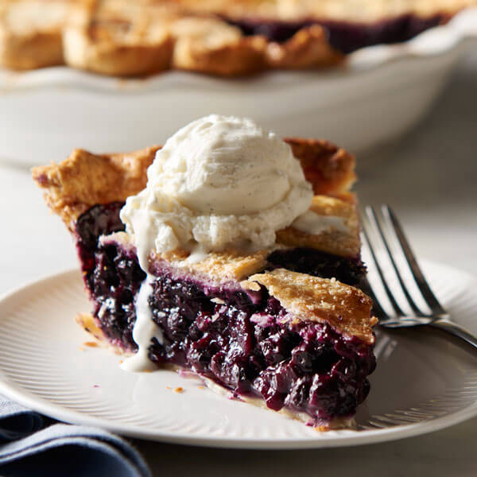

blueberry pie

Description
The classic desert of a homemade blueberry pie is for its fresh smooth and syrupy blueberry filling. A sweet yet tart taste of the filling that is surrounded by a flaky crust on the outer shell. the smooth yet bumpy texture of the filling combined with the soft and crunchy crust is a well mixed delight for your taste buds.
Ingredients
- 3/4 cups-white Sugar
- 3 tablespoons-Cornstarch
- 1/2 teaspoon-ground Cinnamon
- 1/4 teaspoon-Salt
- 4 cups-Blueberries
- 1 (14.1 ounce) package double-crust pie pastry, thawed
- 1 tablespoon-Butter
Steps
- Set an oven rack to the lowest position and preheat the oven to 375 degrees F (190 degrees C)
- Mix sugar, cornstarch, cinnamon, and salt together in a bowl and sprinkle over blueberries.
- Line a pie dish with one pie crust. Pour berry mixture into the crust and dot with butter.
- Cut remaining pastry into 1/2- to 3/4-inch-wide strips. Use the strips to weave a lattice top. Crimp and flute the edges.
- Bake pie on the lowest oven rack until filling is bubbling and crust is golden brown, about 50 minutes.